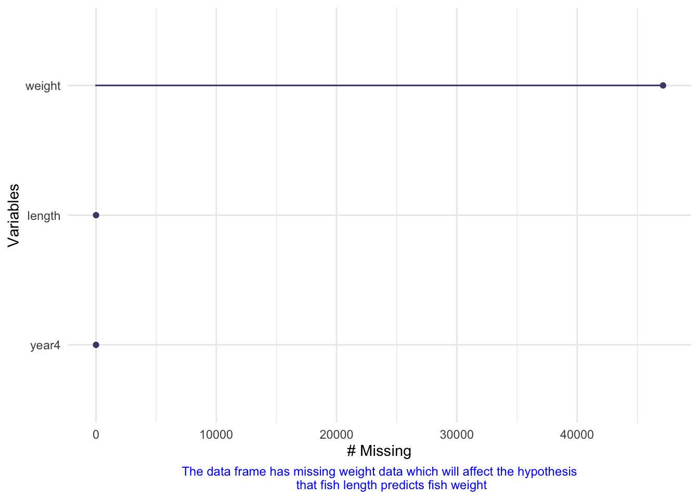
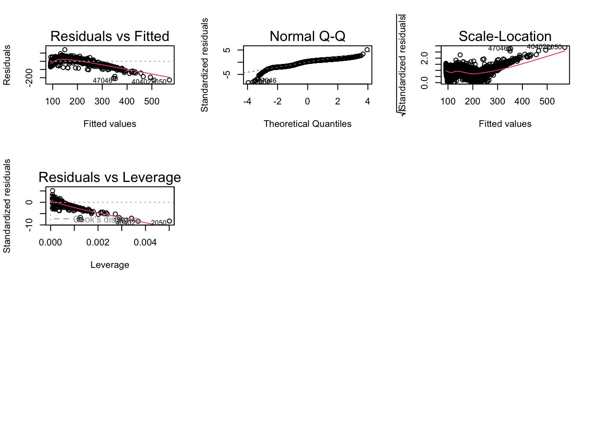
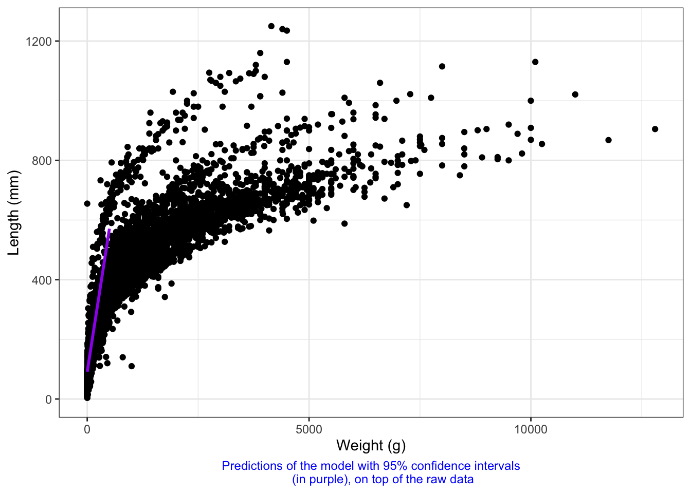

library(tidyverse)
library(here)
library(janitor)
library(ggeffects)
library(performance)
library(naniar)
library(flextable)
library(car)
library(broom)
library(dplyr)
library(plyr)
library(ggplot2)Homework 4
Link to my repo:
https://github.com/veronique-let/ENVS-193DS_homework-04_Letourneau-Veronique./tree/main
Reading in and cleaning up the data:
fish_data <- read_csv(here::here("data", "knb-lter-ntl.6.34", "ntl6_v12.csv")) %>%
# make the column names cleaner
clean_names() %>%
# selecting the columns of interest
select(year4, spname, length, weight)# filtering for yellowperch species only
fish_subset <- fish_data %>%
group_by(spname) %>%
filter(spname =="YELLOWPERCH")Problem 1.
Question posed: How does fish length predict fish weight for trout perch across all sample years?
- Hypotheses:
H0: β1 = 0
HA: β1 ≠ 0
Null Hypothesis (H0): Fish length does not predict fish weight for trout perch.
Alternate Hypothesis (HA): Fish length predicts fish weight for trout perch.
- Missing data visualization:
gg_miss_var(fish_subset) +
labs(caption = "The data frame has missing weight data which will affect the hypothesis
that fish length predicts fish weight") +
theme(plot.caption = element_text(size=9, color="blue", hjust = 0.5))
- Running linear test:
# lm = linear model (~ (what should be predicting)
fish_model <- lm(length ~ weight, data = fish_subset)
fish_model
Call:
lm(formula = length ~ weight, data = fish_subset)
Coefficients:
(Intercept) weight
91.5751 0.9586 - Visual assumption check:
# displaying as 2x2 grid
par(mfrow = c(3, 3))
# visually checking assumptions
plot(fish_model)
5. Diagnostic plot results:
Linear relationship between variables: Looking at the QQ Plot as well as the scale-location plot, the relationship does not seem to be linear as the data points accumulate in one area of the graph and do not follow the linear line of the QQ plot.
Homoscedasticity of errors: Looking at the residuals vs. fitted plot, the residuals do not follow a unform distribution around the line and accumulate in certain areas. The scale-location plot and residual vs. fitted show that the data does not appear to be homoscedastic.
Normally distributed errors: Some residuals have been numbered on the residuals vs. leverage plot, however, none are outside of the Cook’s distance which leads to say that the data has normally distributed errors.
dev.off()
6. Summary results from fish linear model:
# storing the fish summary as an object
fish_summary <- summary(fish_model)
fish_summary
Call:
lm(formula = length ~ weight, data = fish_subset)
Residuals:
Min 1Q Median 3Q Max
-230.553 -17.988 7.883 20.668 141.911
Coefficients:
Estimate Std. Error t value Pr(>|t|)
(Intercept) 91.575127 0.327312 279.8 <2e-16 ***
weight 0.958569 0.004316 222.1 <2e-16 ***
---
Signif. codes: 0 '***' 0.001 '**' 0.01 '*' 0.05 '.' 0.1 ' ' 1
Residual standard error: 27.63 on 12771 degrees of freedom
(47139 observations deleted due to missingness)
Multiple R-squared: 0.7943, Adjusted R-squared: 0.7943
F-statistic: 4.933e+04 on 1 and 12771 DF, p-value: < 2.2e-167. ANOVA table:
# storing the ANOVA table as an object
# anova(): special function to get analysis of variance tables for a model
fish_anova <- anova(fish_model)
fish_anovaAnalysis of Variance Table
Response: length
Df Sum Sq Mean Sq F value Pr(>F)
weight 1 37664209 37664209 49328 < 2.2e-16 ***
Residuals 12771 9751187 764
---
Signif. codes: 0 '***' 0.001 '**' 0.01 '*' 0.05 '.' 0.1 ' ' 1model_squares_table <- tidy(fish_anova) %>%
# round the sum of squares and mean squares columns to have 5 digits
mutate(across(sumsq:meansq, ~ round(.x, digits = 1))) %>%
# round the F-statistic to have 1 digit
mutate(statistic = round(statistic, digits = 1)) %>%
# replace the small p value with < 0.001
mutate(p.value = case_when(
p.value < 0.001 ~ "< 0.001")) %>%
# rename the weight cell to be meaningful by including unit and specie
mutate(term = case_when(
term == "weight" ~ "Perch Weight (g)",
TRUE ~ term
)) %>%
# make the data frame a flextable object
flextable() %>%
# change the header labels to be meaningful
set_header_labels(df = "Degrees of Freedom",
sumsq = "Sum of squares",
meansq = "Mean squares",
statistic = "F-statistic",
p.value = "p-value")
model_squares_tableterm | Degrees of Freedom | Sum of squares | Mean squares | F-statistic | p-value |
|---|---|---|---|---|---|
Perch Weight (g) | 1 | 37,664,209 | 37,664,208.9329 | 49,328.3 | < 0.001 |
Residuals | 12,771 | 9,751,187 | 763.5414 |
- ANOVA table vs. summary() object:
The ANOVA table provides a summary of the sources of variation and the associated degrees of freedom, sums of squares, mean squares, F-value, and p-value found in the summary() object in a more comprehensive way.
- Results summary:
Based on the linear regression model results, there is a significant relationship between fish length and fish weight for trout perch (β1 = 0.9586, t = 222.1, p < 2e-16). The intercept is 91.5751 (t = 279.8, p < 2e-16). The model explains a substantial amount of the variation in fish length (R-squared = 0.7943). These findings are supported by the ANOVA results, which indicate a highly significant F-value (F = 49328, p < 2.2e-16) for the predictor variable weight. Thus, we reject the null hypothesis and conclude that fish length predicts fish weight for trout perch.
- Visualization of model predictions and confidence intervals on top of the underlying data:
# extract model predictions using ggpredict
predictions <- ggpredict(fish_model, terms = "weight")
predictions# Predicted values of length
weight | Predicted | 95% CI
-------------------------------------
0 | 91.58 | [ 90.93, 92.22]
50 | 139.50 | [139.02, 139.98]
150 | 235.36 | [234.39, 236.33]
200 | 283.29 | [281.94, 284.64]
250 | 331.22 | [329.46, 332.97]
300 | 379.15 | [376.98, 381.31]
350 | 427.07 | [424.50, 429.65]
500 | 570.86 | [567.03, 574.69]plot_predictions <- ggplot(data = fish_data,
aes(x = weight,
y = length)) +
# plotting the underlying data for perch fish
geom_point() +
# and plotting the predictions
geom_line(data = predictions,
aes(x = x,
y = predicted),
color = "purple", linewidth = 1) +
# plotting the 95% confidence interval from ggpredict
geom_ribbon(data = predictions,
aes(x = x,
y = predicted,
ymin = conf.low,
ymax = conf.high),
alpha = 0.2) +
# theme and meaningful labels
theme_bw() +
labs(x = "Weight (g)",
y = "Length (mm)",
caption = "Predictions of the model with 95% confidence intervals
(in purple), on top of the raw data") +
theme(plot.caption = element_text(size=9,
color="blue",
hjust = 0.5))
plot_predictions